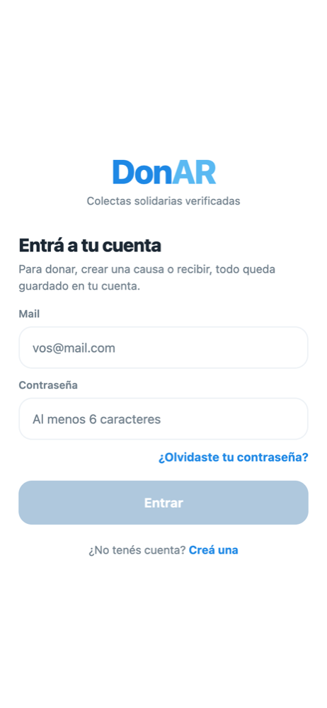
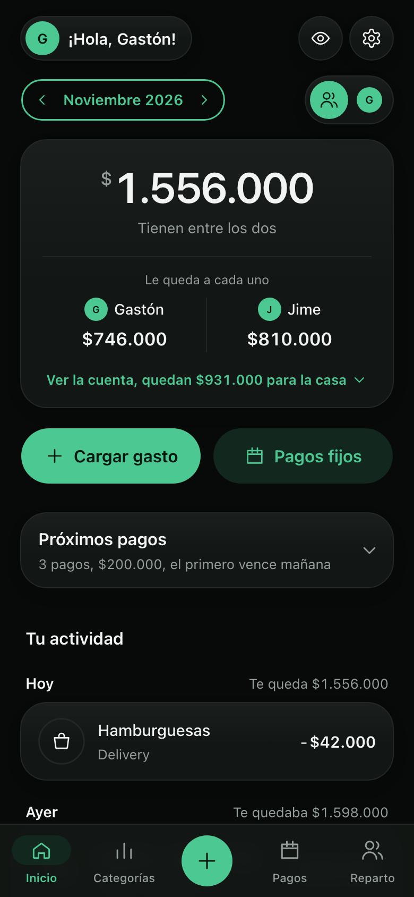
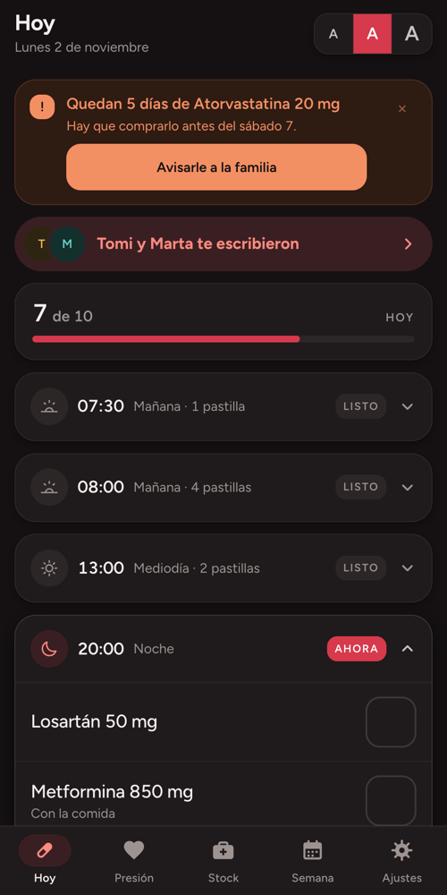
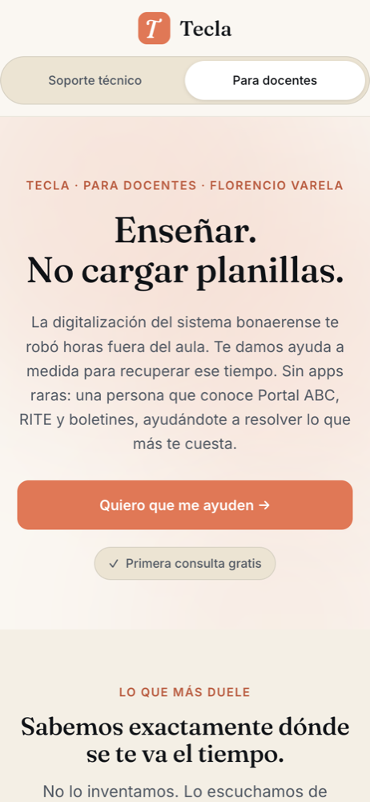

Buenos Aires · abierto a nuevas conversaciones
Construyo producto.
Con equipos y con mis manos.
Ocho años haciendo producto en Mercado Libre, Rappi, Henry y Bigbox, en e-commerce, marketplaces, delivery y EdTech. Hoy además construyo de punta a punta, de la idea al producto en uso, con IA como herramienta de trabajo diaria.
Mercado Libre Rappi Henry Bigbox Coderhouse
01 · Trabajo
Producto en empresas que operan a escala
Cuatro casos contados por sus decisiones: qué problema había, qué elegí, qué resigné y qué pasó.
Bigbox · 2026 – hoy
De un catálogo de regalos a un marketplace que aprende de cada usuario
Leer el casoMercado Libre · 2025 – 2026
El portal donde los restaurantes de Mercado Libre gestionan su operación
Leer el casoHenry · 2022 – 2025
Dos productos de la hoja en blanco a producción
Leer el casoRappi · 2022
El portal que usan cientos de miles de restaurantes todos los días
Leer el caso02 · Proyectos
Lo que construyo con mis manos
Seis productos de punta a punta. Cada uno resuelve un problema real de alguien que conozco, y cada uno tiene una decisión que lo define.

donAR
Demo web en vivoColectas solidarias persona a persona, donde la confianza es el producto.
Ver el proyecto
Billetera Hogar
En uso en casaLos gastos de una pareja, cargados en tres toques y repartidos según lo que gana cada uno.
Ver el proyecto
Heart
En uso todos los díasControl diario de medicación para alguien que no quería aprender una app nueva.
Ver el proyecto
Tecla
En vivo · validandoServicio técnico y soporte a docentes bonaerenses, con arquitectura de costo cero.
Ver el proyecto
Entrená con Jime
En vivoWeb y herramientas de trabajo para una entrenadora de fuerza de mujeres +35.
Ver el proyectoFulbito
En vivoTabla de un torneo familiar de fútbol 5 donde compite el jugador, no el equipo.
Ver el proyecto03 · Proceso
Cómo trabajo
- 01Primero la persona.Cada proyecto empieza por alguien concreto y su problema: un docente, una entrenadora, un familiar, un grupo de amigos.
- 02Las decisiones, por escrito.Cada producto tiene sus trade-offs documentados: qué elegí, por qué y qué dejé afuera.
- 03Lo mínimo que valida.Costo cero hasta que haya demanda. Backend cuando hace falta, no antes.
- 04IA en el día a día.Construyo con Claude Code, v0 y Cursor. Qué construir y qué dejar afuera lo decido yo.